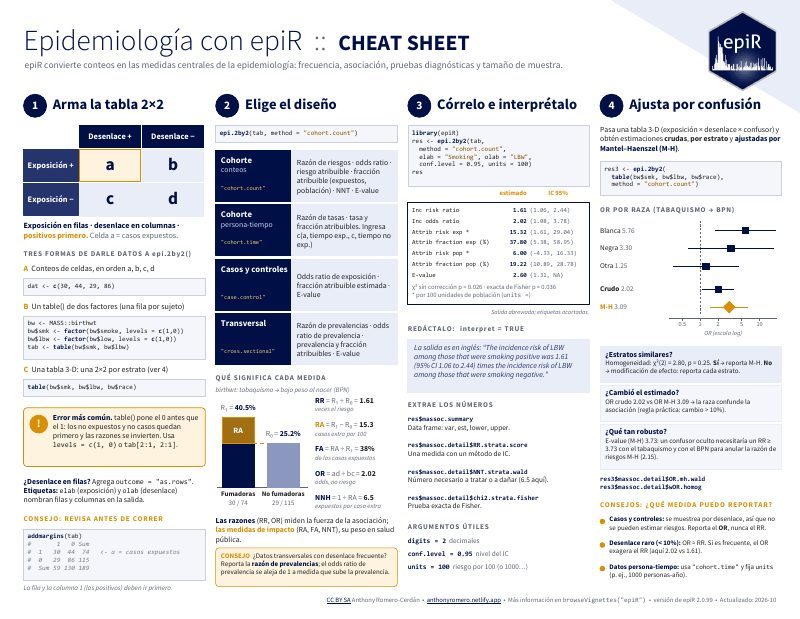
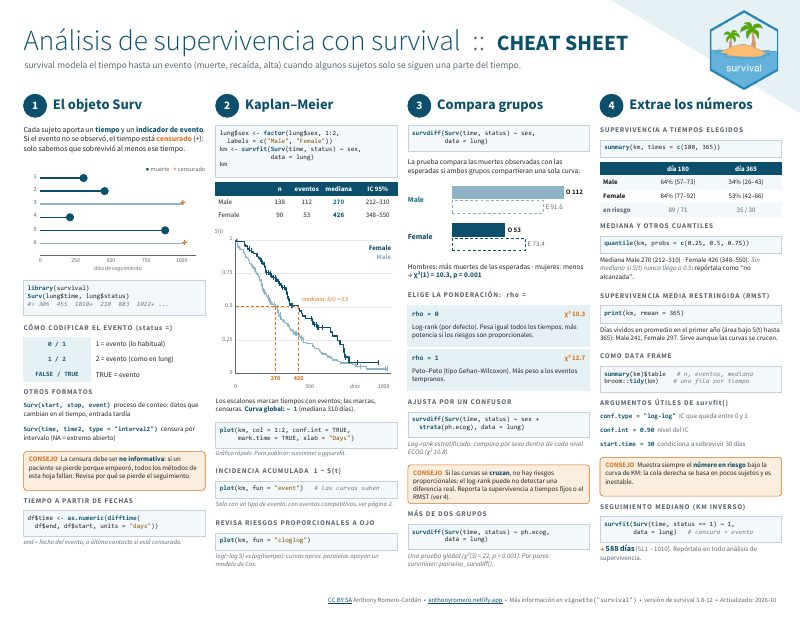
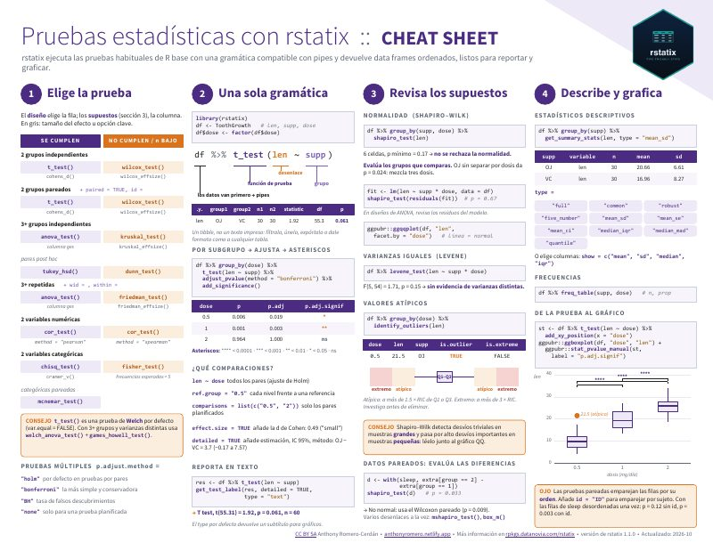
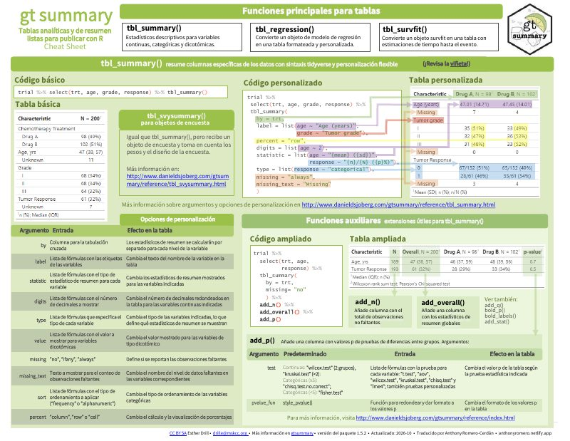
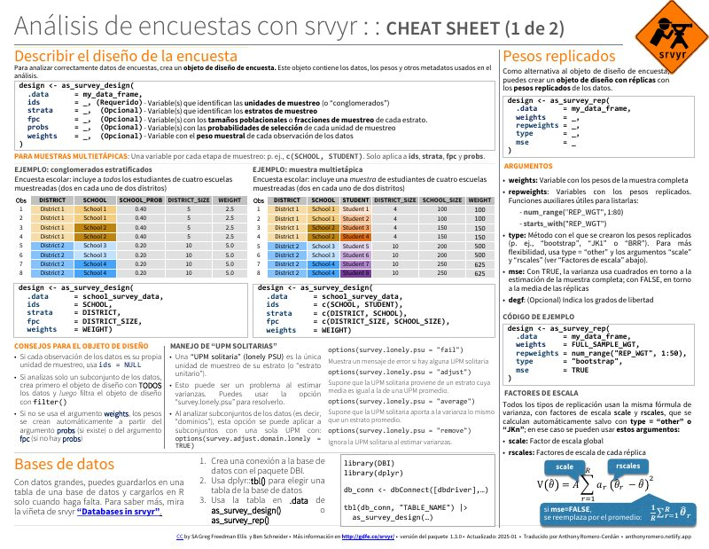
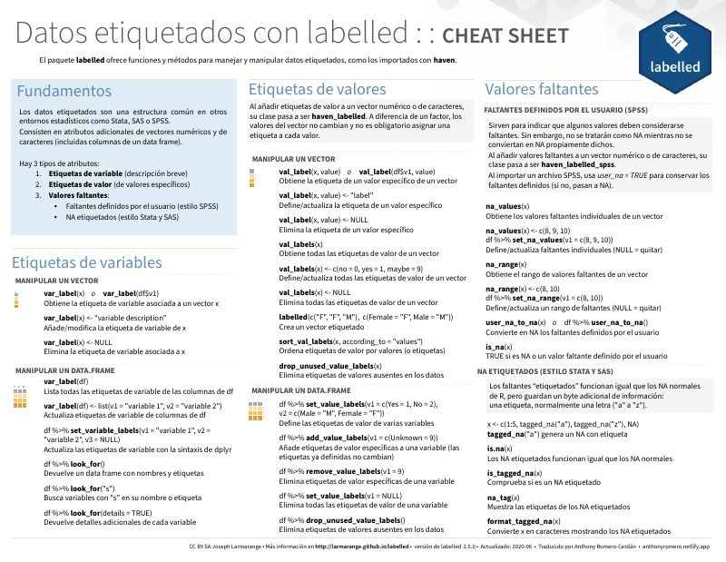
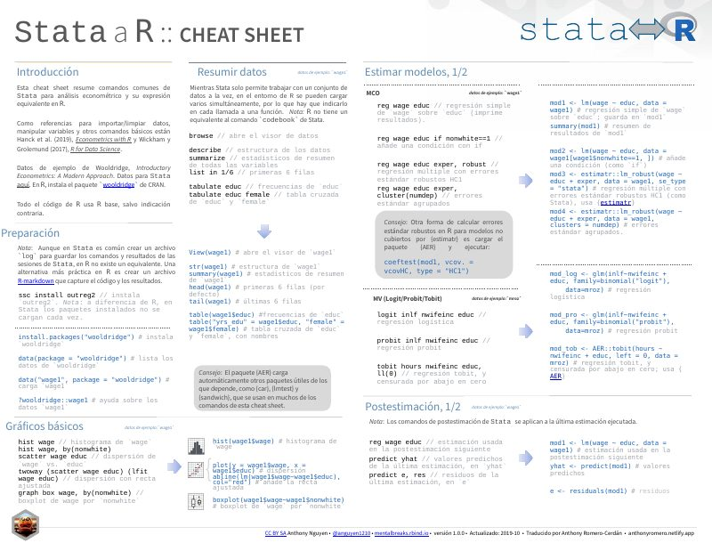
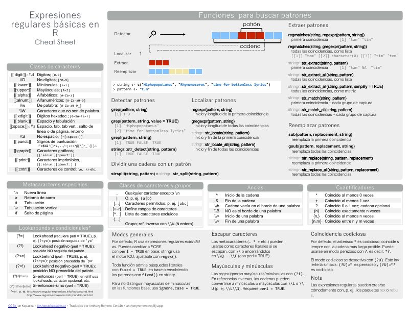
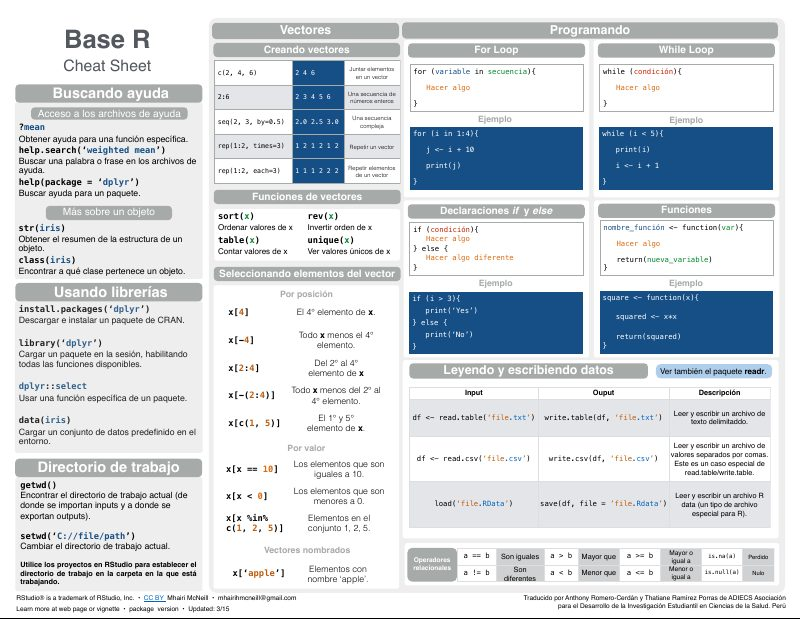
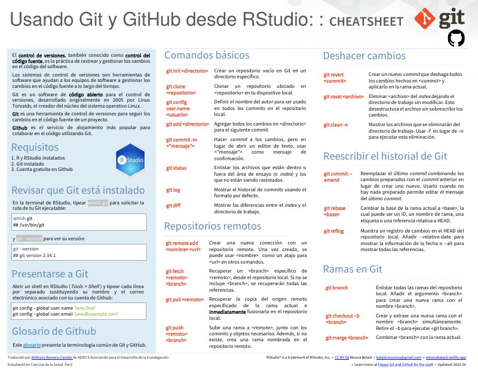

Original
Epidemiología con epiR
Medidas de frecuencia y de asociación, pruebas diagnósticas y tamaño de muestra a partir de conteos.

¿Cuántos participantes necesito?
Calculadora de tamaño de muestra para tesis de salud: prevalencia, casos y controles, cohortes, dos medias, pruebas diagnósticas y correlación. Te da el número, el párrafo para tu proyecto, el código en R y las observaciones que podría hacerte el jurado.

Un triaje en cuatro preguntas que te lleva a la prueba adecuada para tu objetivo, con su código en R y cómo reportarla.
Todos los módulos están en el Consultorio estadístico.
Hojas de referencia de una o dos páginas para tener a la mano mientras analizas en R. Todas son gratuitas y tienen licencia CC BY-SA 4.0.
Escritos desde cero con el formato de los cheatsheets de Posit. Todo el código está verificado en R y cada hoja tiene versión en español y en inglés.

Medidas de frecuencia y de asociación, pruebas diagnósticas y tamaño de muestra a partir de conteos.

Kaplan–Meier, comparación de grupos y regresión de Cox, con sus supuestos y extensiones.

Cómo elegir la prueba, revisar supuestos, comparar grupos y medir el tamaño del efecto, con resultados en tablas ordenadas.
Traducciones de cheatsheets publicados en el repositorio de Posit, hechas junto a algunos amigos/as. Puedes ver estos y otros cheatsheets traducidos en la web de Posit.

Tablas de resumen y de regresión listas para publicar.

Diseños muestrales complejos con la sintaxis de dplyr: medias, proporciones y totales con sus errores.

Etiquetas de variables y de valores, como las de los datos importados de SPSS o Stata con haven.

Equivalencias entre los comandos de Stata y R para quien da el salto.

Patrones para buscar, extraer y reemplazar texto.

Lo esencial de R sin paquetes: vectores, tablas, programación y estadística básica.
Traducido con Thatiane Ramírez Porras.

Libros gratuitos en línea, en inglés, para seguir aprendiendo R aplicado a la salud. Para cada uno, a quién le sirve, qué leer primero y con qué entrada de esta web se complementa.
Peter D. R. Higgins, MD, PhD
Para quién: Médicos y residentes que empiezan a analizar sus propios datos en R.
Qué leer primero: Los capítulos de importación y limpieza de datos, Tabla 1 con gtsummary, tamaño de muestra con pwr y cómo leer los mensajes de error.
Complétalo con: La Tabla 1 de tu tesis · ¿Cuántos participantes necesito?
Kamarul Imran, Wan Nor Arifin y Tengku M. Hanis
Para quién: Tesistas y profesionales de salud que ya manejan lo básico y quieren pasar a los modelos.
Qué leer primero: Regresión logística, de Poisson y supervivencia (Kaplan-Meier y Cox), datos faltantes y construcción del modelo.
Complétalo con: ¿OR o razón de prevalencias? · ¿Qué prueba estadística uso?
Nhan Thi Ho, MD, PhD, y colaboradores
Para quién: Estudiantes e investigadores biomédicos que buscan estadística aplicada con práctica en R.
Qué leer primero: Estadística básica, regresión, análisis de supervivencia, datos longitudinales y ensayos clínicos.
Complétalo con: El estudio de cohortes
Statistics Team (curso de maestría)
Para quién: Quien parte de cero en R y quiere una base ordenada, con ejercicios resueltos.
Qué leer primero: Estructuras de datos, tidyverse, proyectos y reproducibilidad, y gráficos con ggplot2.
Complétalo con: Manual de instalación de R, RStudio y Rtools
Tomás J. Aragón
Para quién: Epidemiólogos y analistas de salud pública con interés en un enfoque más amplio.
Qué leer primero: Fundamentos de R y los dominios de la ciencia de datos en salud poblacional: descripción, predicción, inferencia causal, simulación y optimización.
Complétalo con: Diseños de estudio
Las portadas son ilustraciones propias; cada libro se lee gratis en su sitio oficial.